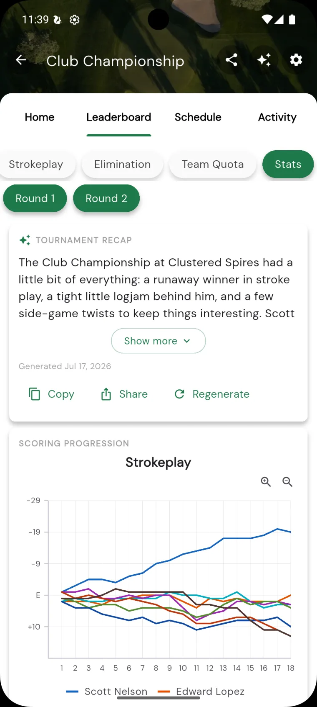
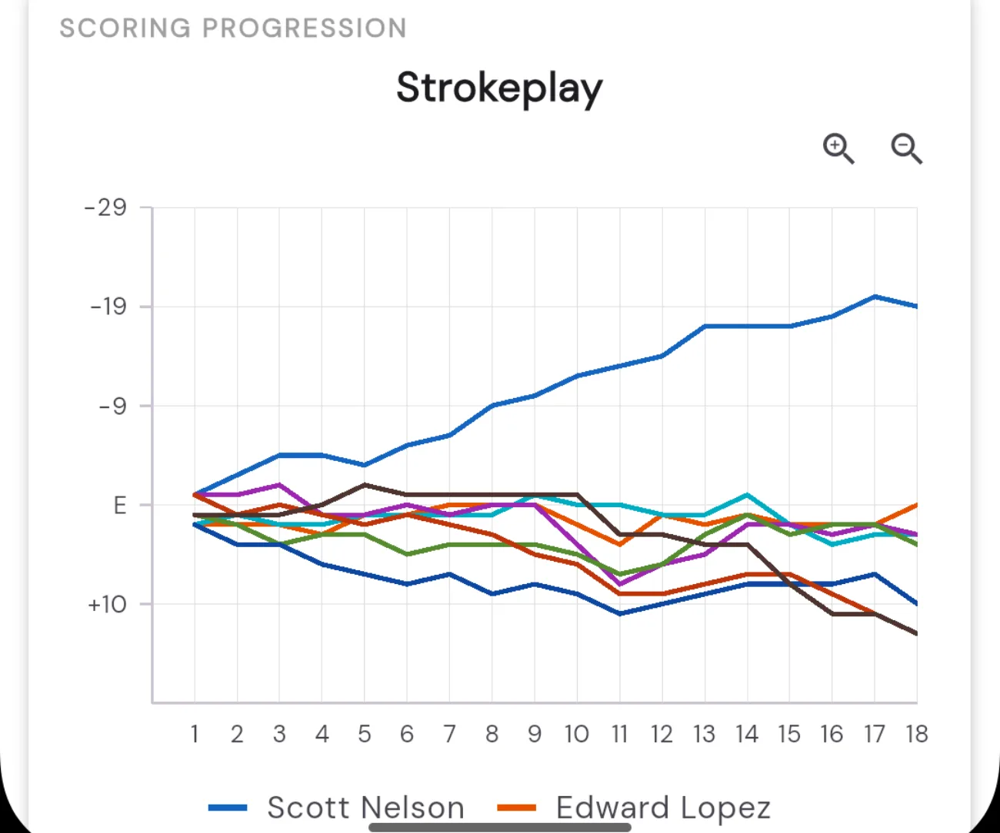
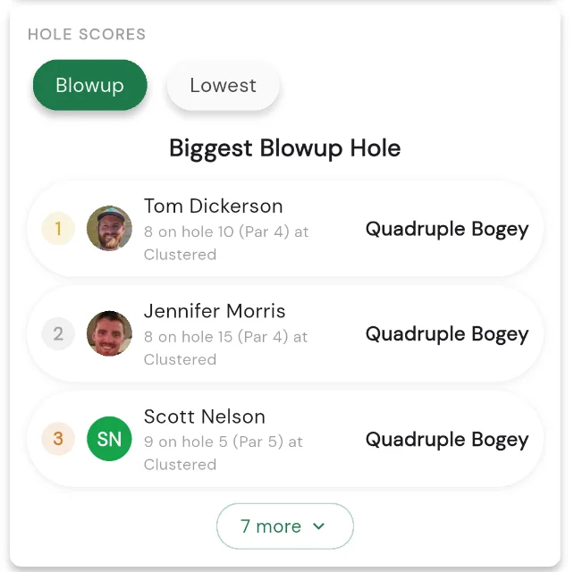
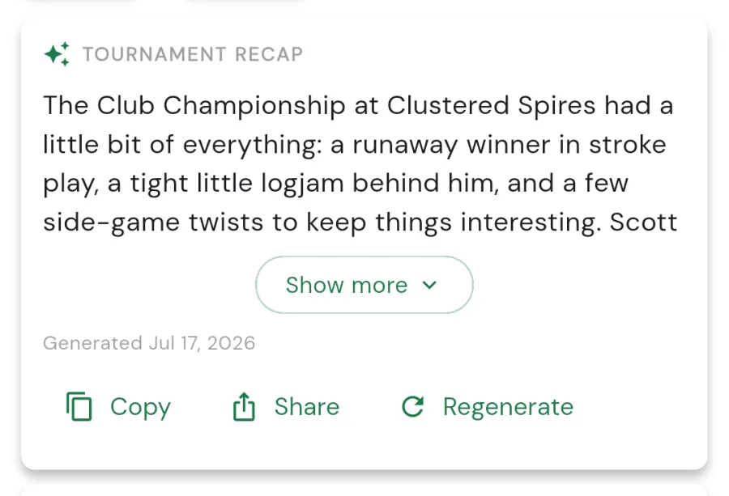

Tournament stats and AI recap
Once the scores are in, the fun is in the numbers. Squabbit takes every scorecard from your tournament and turns it into a set of stat cards (who blew up on which hole, who had the best round, who putted the lightest), plus an AI-written recap that tells the story of how the event played out. It’s all built automatically from the rounds your players scored, so there’s nothing to fill in.
This article walks through what the stats screen shows and where to find it.

Where to find it
Open the tournament, go to the tab, and tap the chip in the row of chips at the top (alongside your format leaderboards).
If your tournament ran more than one round, a row of Round chips sits above the stats. Tap any round to include or exclude it, so you can look at a single round’s numbers or the whole tournament combined.
What’s in the stats
The stats screen is a scrolling stack of cards. At the top sits the tournament recap, then a scoring progression chart, then a long list of leaderboard-style stat cards. Each card ranks players, with gold, silver, and bronze markers for the top three and an avatar next to every name.
Most cards have a small row of chips to flip between related cuts of the same stat: best versus worst, gross versus net, front versus back. Cards start collapsed to the top three; tap Show more to expand the full list. A card that doesn’t have enough data yet simply says so rather than showing an empty list.
Scoring progression chart
Near the top, a Scoring progression chart plots how the field’s scores moved relative to par over the round. If your tournament has more than one scored format, a chip row lets you switch which format the chart is drawn for.

Per-hole and per-round breakdowns
The stat cards cover the event from a lot of angles. Among them:
- Hole scores: the biggest blowup holes and the lowest single-hole scores of the tournament.
- Best and worst rounds: ranked by both gross and net, for the full round and split out by the front and back nine.
- Scoring by par: who scored best and worst on the par 3s, par 4s, and par 5s.
- Hole difficulty: who handled the hardest holes best, and who gave shots back on the easiest ones.
- Birdies and double bogeys: most birdies (or better) per round and in total, gross and net, plus the most doubles-or-worse.
- Streaks: the longest par-or-better run, and the longest bogey-or-worse skid.
- Putting: fewest and most putts, and lowest and highest putting averages.
- Accuracy: most and fewest fairways and greens in regulation.
- Score dispersion: the steadiest and the streakiest scorecards.
- Lost balls: who kept it in play and who didn’t.
Cards that rely on extra detail (putts, fairways, greens, lost balls) only fill in when players tracked that data on their scorecards. The more your field logs, the richer the stats get.

The AI recap
At the top of the stats screen is the tournament recap: a short, AI-written article that reads the results and tells the story of the event: the outcome, the standouts, and how it played out. Once at least one player has a completed round, Squabbit writes one automatically, and everyone who can see the tournament can read it.
You can pick the style of the recap when you generate it:
- Banter: a sports recap with friendly ribbing.
- Professional: a clean tournament report.
If the tournament has hide negative stats turned on, the recap is written in the Professional style and skips the ribbing, since Banter leans on the good-natured call-outs.
The recap card shows the date it was written and gives you Copy and Share buttons so you can drop it into a group chat, an email, or wherever your golf crew hangs out. Long recaps collapse to a few lines with a Show more pill to read the rest. There’s also a Regenerate option to rewrite it, handy if more scores have come in since the last one, or you want to try the other style.

That’s the whole picture: the leaderboards tell you who won, and the stats and recap tell you the story of how they got there. Have fun digging in.